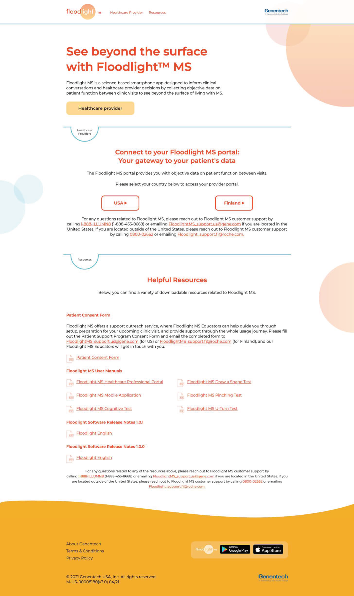

Floodlight MS is an iOS and Android app that allows MS patients to engage in simple daily activities to objectively monitor symptoms and disease progression, while sharing the details with their care team.
My team designed an accessible website for the app, building upon the look and feel of an earlier microsite, while incorporating an expanded content strategy and applying a mobile first approach.
Project overview
Genentech and Roche’s Floodlight MS, is app that allows patients living with MS to complete simple tasks on their devices to capture data that tracks disease progression and allows their providers to interpret these objective measures through a provider portal. The Floodlight MS app closes gaps in communication and reduces subjectivity in patient reported symptoms. My team was involved in two phases of the website that partners with the app.
The Problem
The true challenges came down to limited real estate and time. The first phase of of the site served as a pre-launch introduction to the Floodlight MS app and had minimal content. The brief called for the full launch website to have a much more robust content strategy, which was directly in conflict with the imperative for a minimalistic layout with few pages. Additionally A highly consolidated timeline leading to launch required a new approach to working efficiently.
The Solution
Careful consideration of the site architecture and collaboration between UX and copywriting allowed us to deliver robust content in a minimalist layout. We reassessed a legacy workflow between UX and creative direction and shifted our approach to minimize inefficiencies. By partnering to work in succession with one file; UX and art significantly reduced the time required to transition wireframes into creative design.
Role
UX Design Lead
Key deliverables
User stories
Sitemap
Wireframes
Functional Requirements Document
Tools used
Sketch
Zeplin
Interpreting the brief
In the second phase of the Floodlight MS project, we were challenged to update the site, expanding from the one-page layout of the first phase and introducing a second page with deeper, more clinical content for providers. We were to build upon the established look and feel of the previous microsite but expand significantly upon the content, applying a mobile first approach.
Key considerations included
The scalable, mobile first, site needs to be content rich, but visually light.
Brand new HCP-specific content will provided a deep-dive into usage, benefits and onboarding.
We could add only one new page to the existing 1-page microsite structure
We would design a global site and the site design would be provided to and adapted for use by local affiliates, adhering to their local laws and regulations governing medical device messaging.
We were to take inspiration from sites that reflect the client's design vision.
Design with the KPIs in mind: success would be measured by the number of visitors, requests for more info and requests for demo.
Phase one: the interim microsite
Documentation of Phase 1
Continuity between the UX team members who led work on the first phase and the incoming team members who would lead phase two was supported by well prepared documentation, including thorough functional specifications, and working Sketch files that contained symbols ready for application to the phase two project.
Phase 1 Functional Specifications
Functional specifications prepared by the phase-1 team
Phase 1 Functional Anotations
Functional annotations prepared by the phase-1 team
Phase 1 wireframes
Wireframes prepared by the phase-1 team
The two teams communicated on the challenges and opportunities that lied ahead with the second phase.
The Site Infrastructure of Phase 1
The phase 1 microsite included a single page format, with a single page with sections for People Living with MS, HCPS and Resources for both user types.
Phase one sitemap with three key sections - HCP, Patient and Resources
Sitemap prepared by the phase-1 team
Phase 1 Full Layout
Full site layout prepared by the phase-1 team
Updates to Phase 1 in paralell with work on Phase 2
The team was asked to streamline the live microsite In parallel with the design of the full site, Highlighting the key function of allowing healthcare providers who have already adopted the tool, to access the provider portal, eliminating the patient directed content and removing the contact form.

My team's approach to consolidating content on the microsite
Expanding the site structure for phase 2
Looking to inspiration
The client was inspired not only by the sleek look and feel of sites like Oleena.com, but by the well-crafted inclusion of deeper content than is visually apparent upon first glance. We wanted the visual layout to provide a deeper look into the product, without the visual clutter that’s inherent to an in depth content strategy. A one page layout and artful use of anchor links, iconography, tabs, and hover states were all design patterns that we saw contribute to the overall light and airy experience that we needed to keep in mind as we worked to the strategize how to overcome the disparity between content and page real-estate.
1 page layout
Anchor links
Iconography
Tabs
Hover states
User stories directed by the brief and strategic imperitives Informed the sitemap and content strategy
The new site would target two key audiences, patients and providers, with the homepage presenting an overview suitable for consumption by both, but patient facing on its surface. A separate more detailed page would contains the sort of clinical content thay providers in particular would be seeking.
Patient user stories included:
As a patient or caregiver, I want to download the Floodlight MS App, so that I can begin to use it.
As a patient/caregiver I want to know what to expect once I am in the app, so that I don’t adopt a tool that isn’t useful for me.
As a patient/caregiver, I want to contact customer support for more information so that I can obtain access.
As a patient/caregiver, I want to access resources, so that I can review additional documentation for the application.
As a patient/caregiver, I want to access FAQs, so that I can find answers to common questions and avoid needing to reach out to support.
As a patient/caregiver I want to review the intended use statement to clarify any ambiguity on what the app’s intended use it.
Health care provider user stories included:
As an HCP, I want to determine what Floodlight MS is so that I can determine if its relevant to my practice.
As an HCP, I want to know what metrics are a part of the app experience to that I know what my patients will be experiencing.
As an HCP, I want to access resources, so that I can review additional documentation for the application.
As a HCP, I want to access FAQs, so that I can find answers to common questions and avoid needing to reach out to support.
As an HCP, I want to review the intended use statement to clarify any ambiguity on what the app’s intended use it.
As an HCP, I want to request a demo, so that I can find out exactly what the provider and patient benefits and experience are and onboard.
As an HCP, I want to know how the 5 activities compare to traditional patient followup, to quickly understand why I should further explore this solution.
As an HCP, I want to know what in-clinic assessments are replaces by the 5 activities, so that I am sure all of y current bases qill be adequately covered by the app.
Sitemap and content strategy
Developing the phase two sitemap happened in close collaboration with the copywriting team. The primary homepage departed from 3 three main sections and expanded to 5. While the general functions on the preceding site would continue, they would be largely re-written and expanded before being placed along side brand new content.
Inventorying what would be reimagined and what would be new
Although the inspiration sites were primarily one-page, this project required that a full new page needed to be incorporated for HCP content. This new page would introduce a cache of new provider directed content previously approved by GRC for use in other tactics.
In-kind, the complexity of the sitemap grew, as did the level of detail provided for each item mapped:
Overview: Provides HCP specific insight into the tool and its benefits
Activities: Explains the activities users take and how they correlate to commonly used clinical assessments
Unmet Need: Compares the challenges presented with the commonly used clinical assessments and the solutions offered by the Floodlight MS tool
Portal Features: Explains what the portal experience is like for participating providers
HCP Support: Provides contact information for provider support
Request a Demo: Allows providers to request a demo, ultimately driving them toward conversion
The new sitemap
The manuscript
Written content for phase two was presented in a detailed manuscript. UX provided early insight into what components may be suitable for delivering unique content, such as cards, tables and tabs.
The new manuscript
Wireframes
With the sitemap and manuscript approved by the client, it was time to plan individual page infastructure by preparing a set of wireframes. The agency’s UX workflow may incorporate a variety of design tools for wireframing as directed by client need that include programs such as Sketch, Figma and Adobe XD.
Without a client directive, we primarily recommend Sketch because it’s an industry leader and provides a wide swath of functionality to design, prototype, and collaborate on projects. Sketch has partnerships for collaboration with some of our most commonly used tools, such as Zeplin, a resource for handing off design files to our client’s development teams and it provides a good balance of stability and expanding capabilities. New plugins mean that Sketch can be customized to meet a seemingly endless array of project needs.
Most importantly, Sketch files are increasingly becoming one of the most requested UX design deliverables for handoff.
As we moved forward with Sketch wireframes, our collaboration with copywriting had allowed for opportunity to provide feedback on what components would best tell the story in the manuscript. Those components were brought into wireframes and evolved through several iterations.
Homepage wireframeHCP page wireframe
Creating a design file that would cross disciplines
Seeking to streamline handoff between UX and art direction, a few key considerations went into setting up the design file so that it could cross disciplines and prevent the need for art direction to recreate the design environment in Adobe Photoshop.
Clearly organize the desktop.
Ordering artboards in logical sequence on the canvas
Labeling artboards with informational names and numbers that created ordered PDF exports
Employ symbols to update recurring components at one time.
An organized sketch workspaceeClear and consistent element labelingSymbols are used to minimize reetitive uopdates
Advocating for art direction in Sketch
Moving into the creative direction phase I handed off my sketch files via Sketch Cloud allowing the creative designer to join the file, duplicate my wire frame pages and use them as the basis for the creative design.
Employing the Sketch symbols feature early in the wire framing stage empowered us to turn items as complex as entire sections of the website into recurring elements. This made it extremely easy to make quick updates to the look and feel of components and update copywriting as the client’s promotional review committee shared revisions. When changes were made to a symbol, this automatically pulled through to all artboards that contain that symbol.
The creative designer appreciated working with sketch artboards over the layer comps in Photoshop because it was easier to see all states of the site together at one time in Sketch. The way the artboards are laid out in Sketch makes it easy to ensure everything is included and that all elements align well.
I collaborated closely with creative design during this stage to make usability revisions including the inclusion of the transcript overlay for the homepage’s hero section video, and inclusion of video overlays of the app activities on the provider’s page.
Revisions for accessibility
Every project needs to be designed with accessibility in mind, so I also provided extensive consultation on how to adhere to the WCAG 2.1 AA standard for accessibility. Color contrast proved challenging to maneuver because, as is often the case, brand colors were approved by the client before our engagement and limited opportunities to create high contrast without close consideration. We also made several revisions to ensure that more obscure guidelines were adhered to, such as the need to ensure that videos and animations of 5 seconds or more have a way to be paused, stopped or hidden.
Benefits to Creative Design
By eliminating the shift from Sketch wireframes to creative layout in Photoshop, we reduced the opportunities for human error and duplicative work. Sketch symbols eliminated the need to make repetitive updates across many layer comps. We shaved days off of our timeline and got our project approved through the client’s promotional reviews committee and handed off to the client’s development team on time.